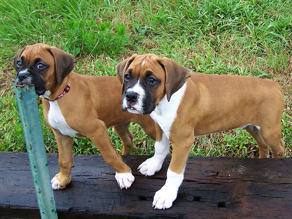
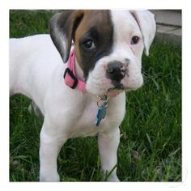

Boxers were originally breed in Germany as hunting dogs for deer and wild boar, but today they are loyal companions. Boxers are the goof balls of the canine world and they are proud of it. Boxers are always ready to play and see jumping on their owners as on okay thing to do. Boxers can be trained but the owner must be aware of the “goof ball” temperament to get through to them.
Pros
 Brindle
Brindle
Fawn
White
Here is a website that has more details about the boxer dog and its different colors.
Pictures of different shaded BoxersFollow us onto the next page to find out more information about Australian Shepherds and Boxers.
I am the author of this Website and my name is Lydia Krasucki. I created this pilot website for school.
I got these photos from google images. I have no rights to them. I am just using them for my final project(this).